12 plates. Deterministic overlays rendered by the composition-analysis skill.
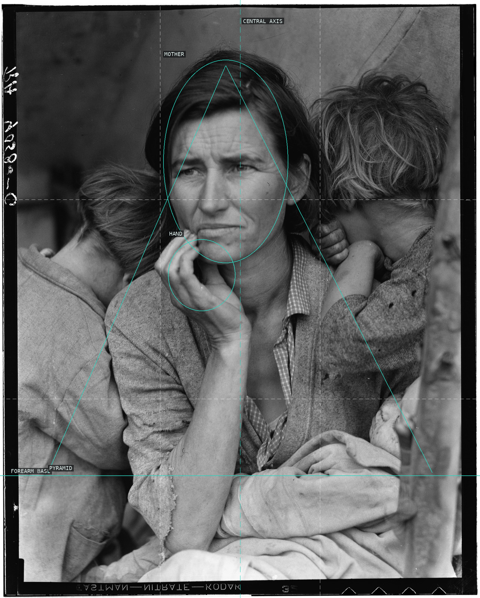
01-migrant-mother Classical pyramid: mother's head the apex, flanking children its sides, crossed forearm the base — a frontal figure pinned to the central axis, hand as keystone.
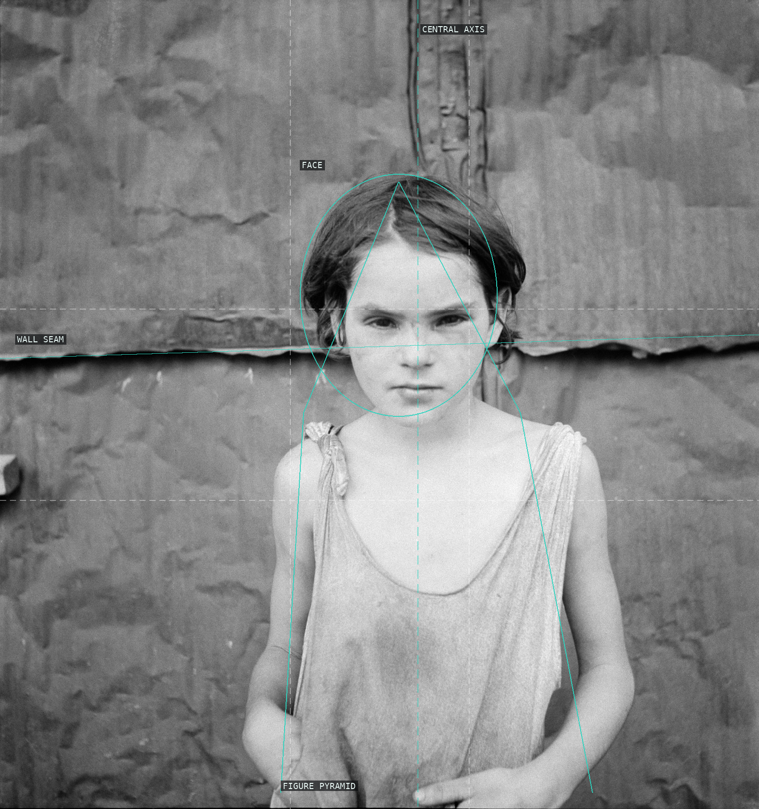
02-damaged-child Frontal child pinned to a flat board wall: a central vertical axis and the horizontal seam form the cross that traps her; the body rises as a shallow pyramid to the face, the psychological center.
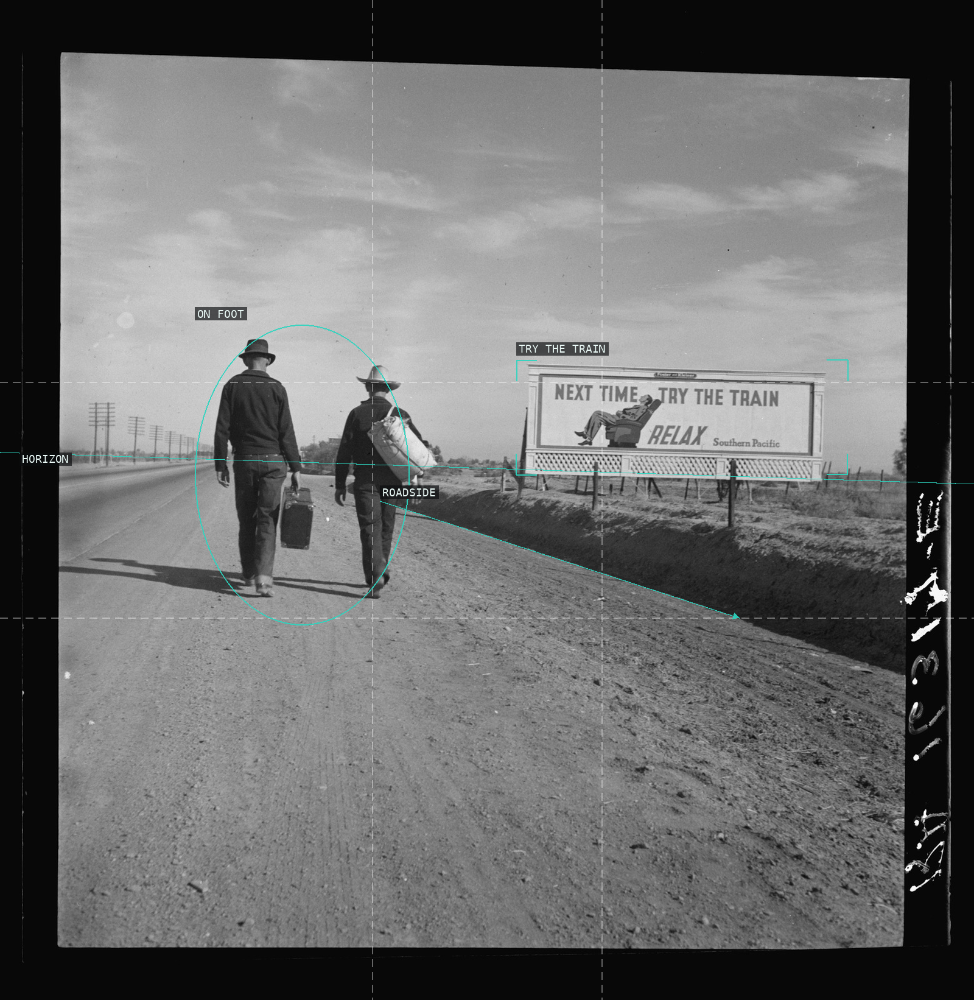
03-toward-los-angeles Two migrants on foot, bisected by the horizon, walk the dirt shoulder toward the ironic Southern Pacific billboard promising an easier way to travel.
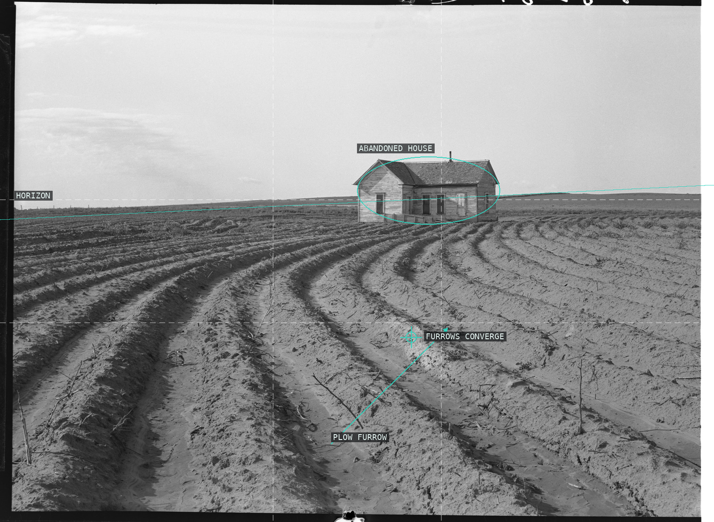
04-tractored-out Contour-plow furrows sweep up to a low vanishing point beneath the abandoned house; a high horizon presses the ravaged earth against an empty sky.
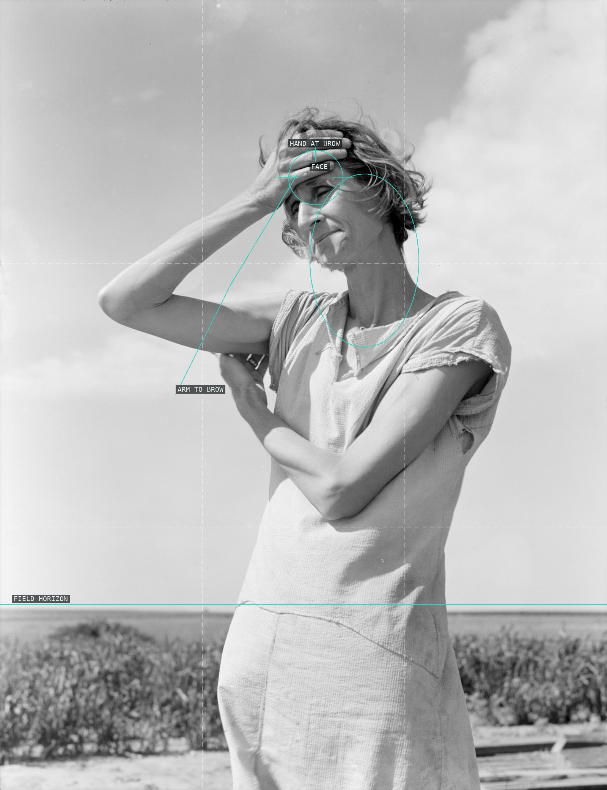
05-woman-high-plains A single figure monumentalized against the empty high-plains sky; the raised forearm climbs to the hand pressed at her brow, the gesture that carries the frame.
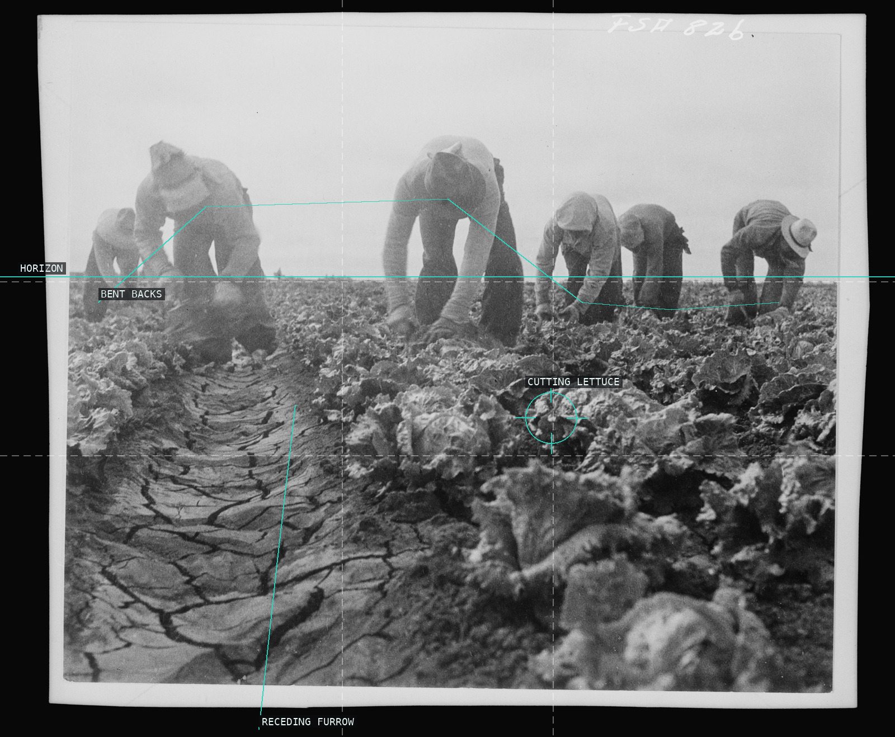
06-filipinos-cutting-lettuce A frieze of stooped pickers: bent backs repeat in a receding rank while the cracked furrow draws the eye up into the field's depth.
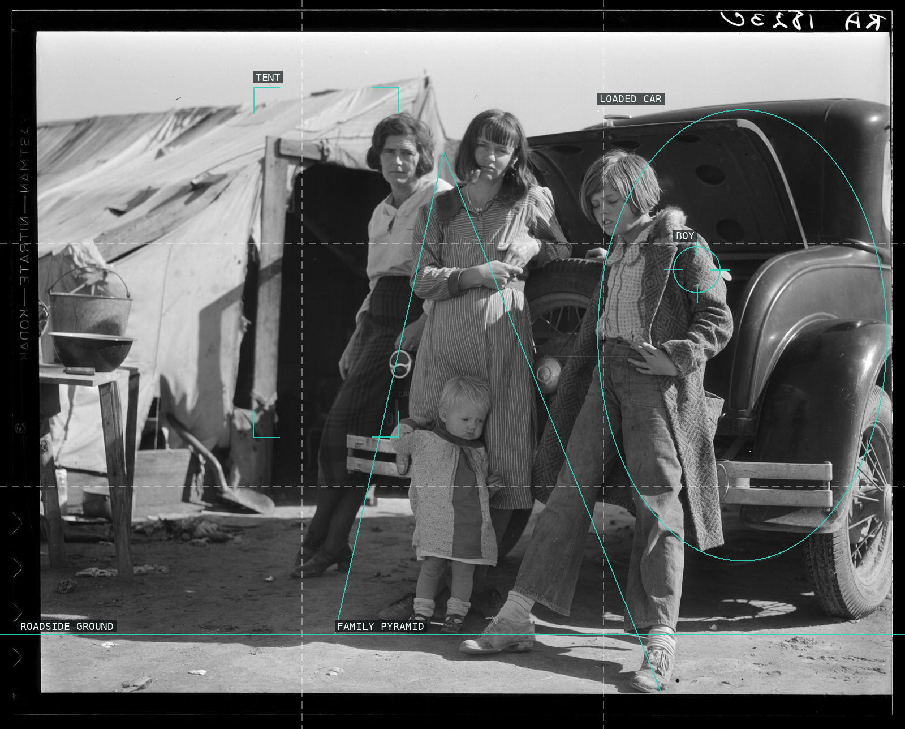
07-drought-refugees A migrant family clustered into a pyramid on the dusty roadside, wedged between the tent behind and the dark loaded car ahead.
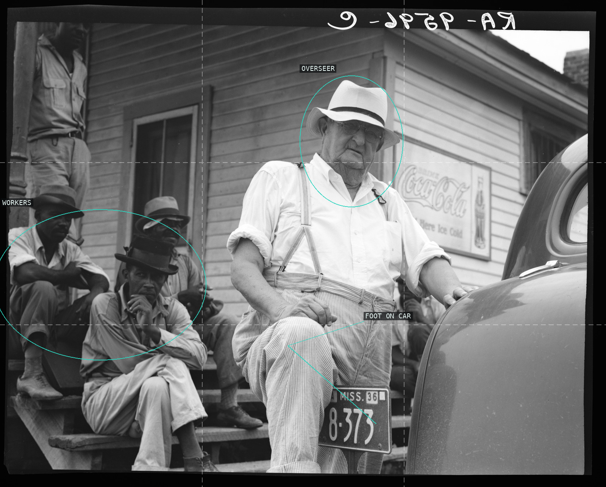
08-plantation-overseer A monumental foreground planter, foot planted on his car, fills the frame while the Black workers recede as a compressed social plane behind.
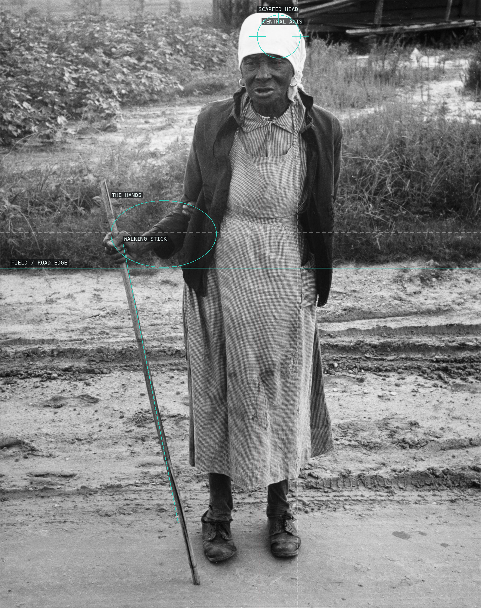
09-ex-slave-long-memory Planted frontally on the central axis, the standing figure is doubled by the vertical of her cane; the white-scarfed head crowns the column and the crossed hands hold its center.
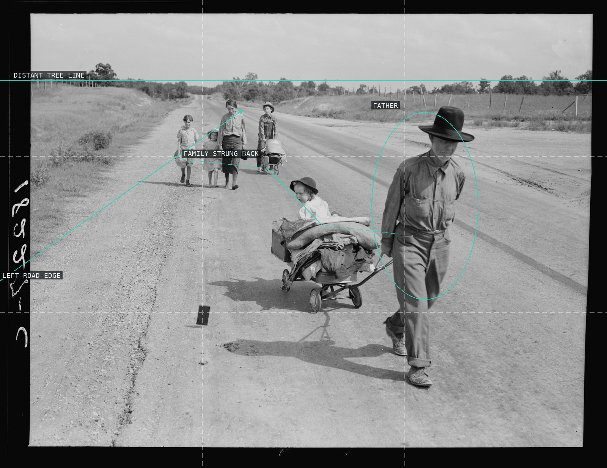
10-family-walking-highway One-point recession down a wide graded highway: the road drives to a vanishing point at the distant tree line while the migrant family strings back along the corridor — the father hauling the cart largest in the foreground, the others dwindling into the distance.
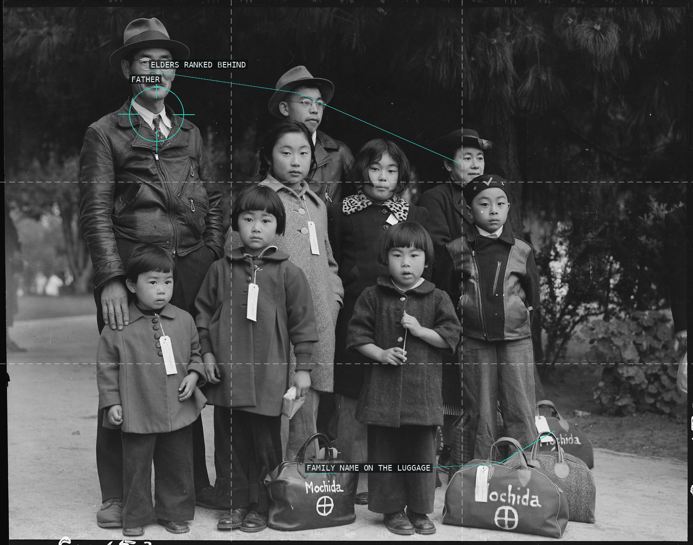
11-mochida-family-hayward-evacuation A frontal wall of eleven: elders ranked along a descending headline, children massed below, the family surname stenciled on the tagged luggage at their feet — people readied for shipment.
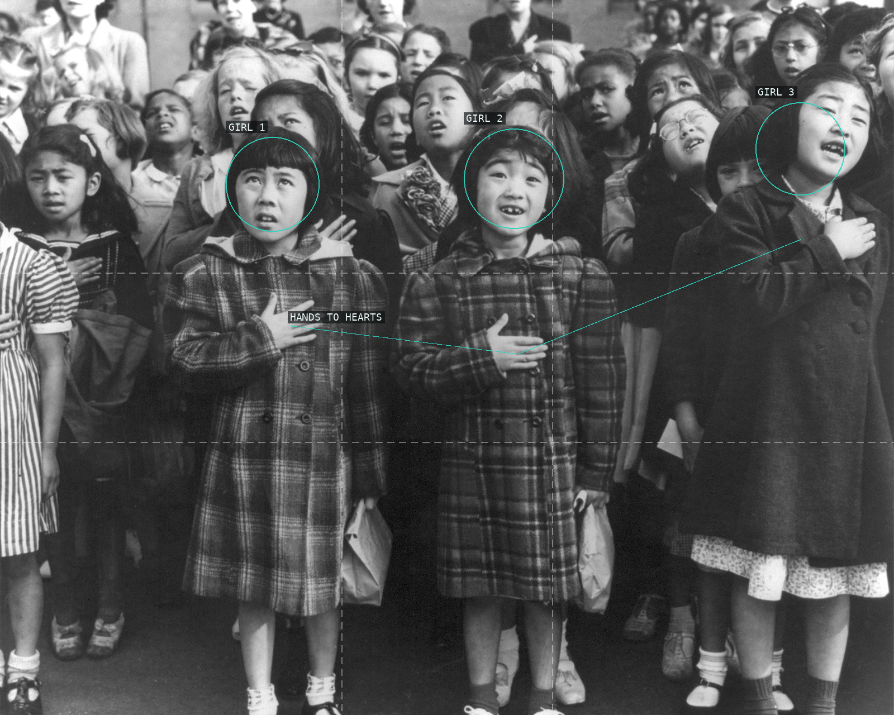
12-pledge-of-allegiance The pledge as rhythm: three girls, three hands to three hearts — one repeated gesture threading a row of small figures.